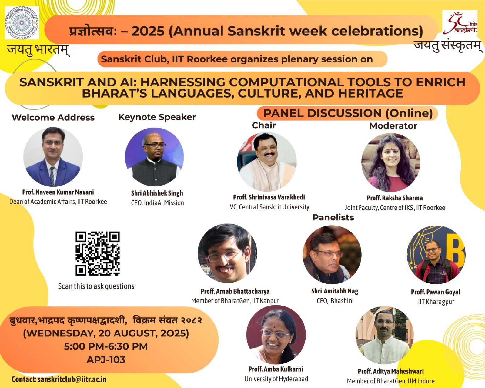
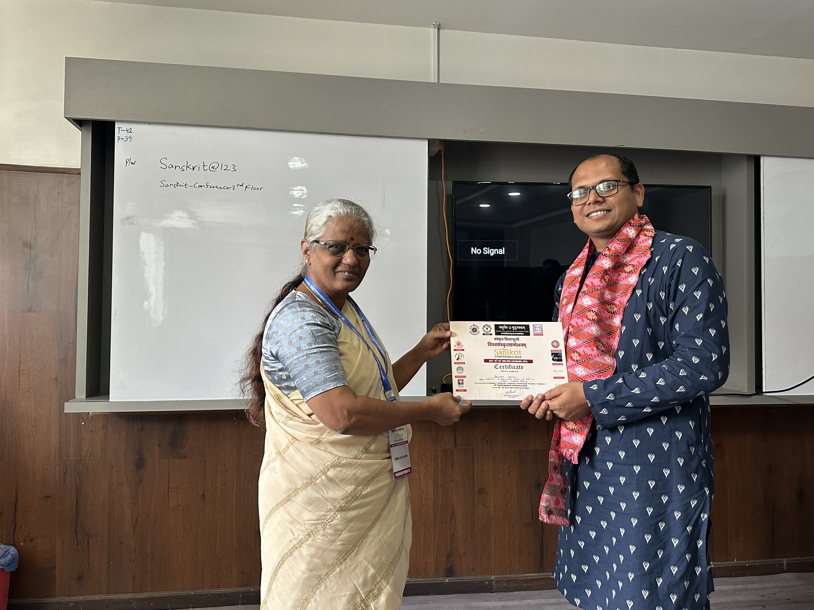
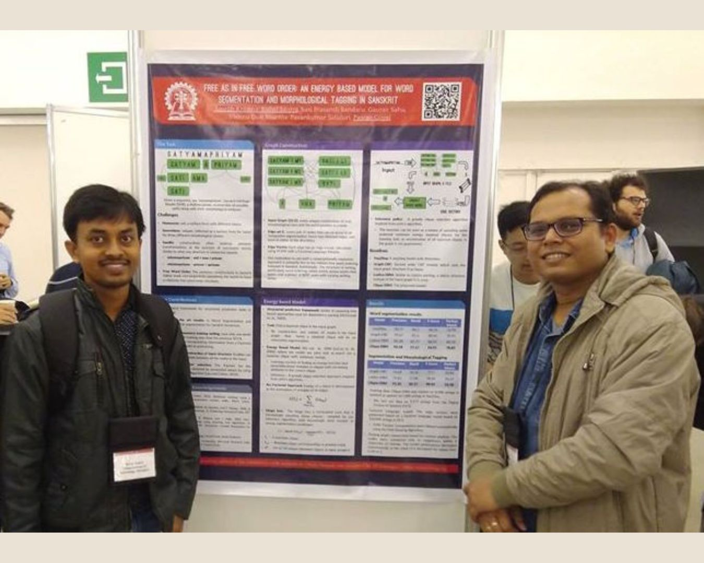
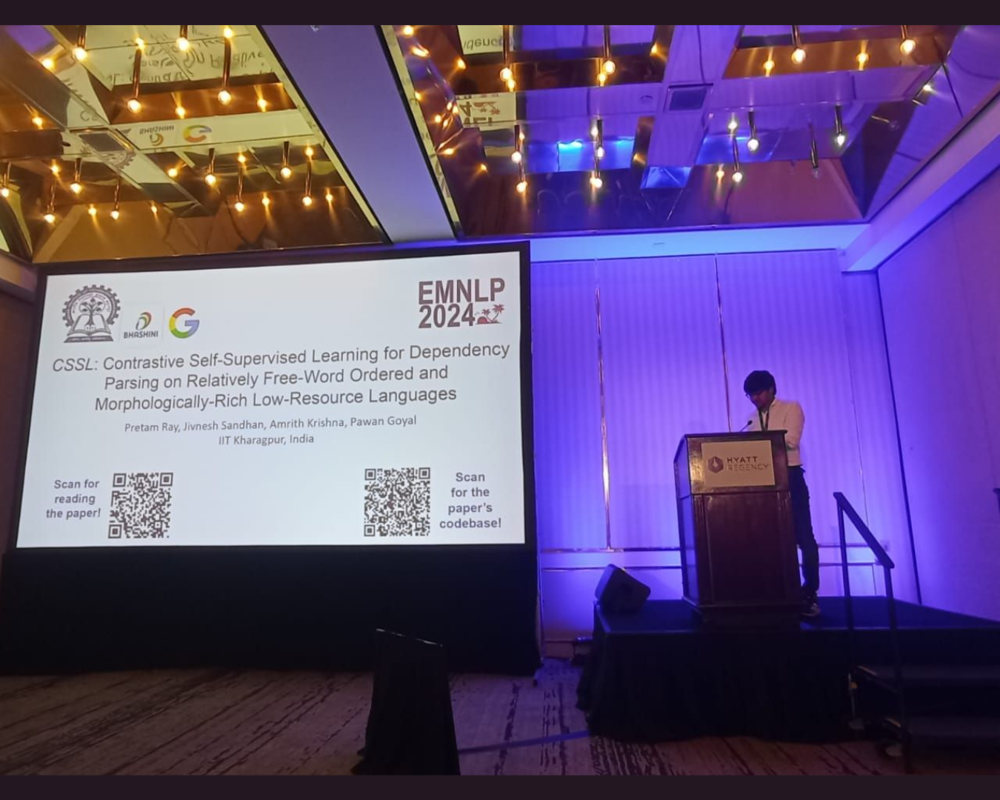
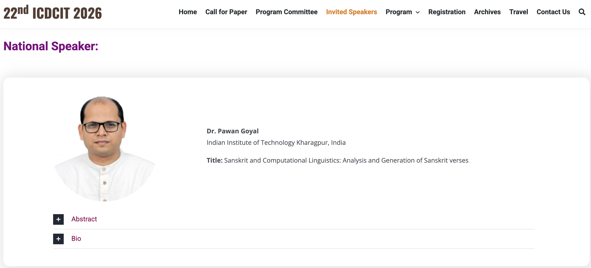
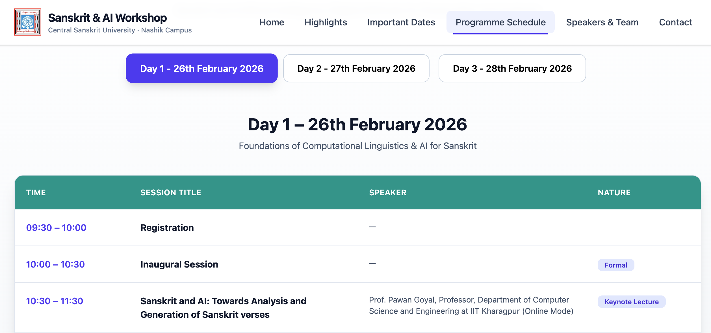
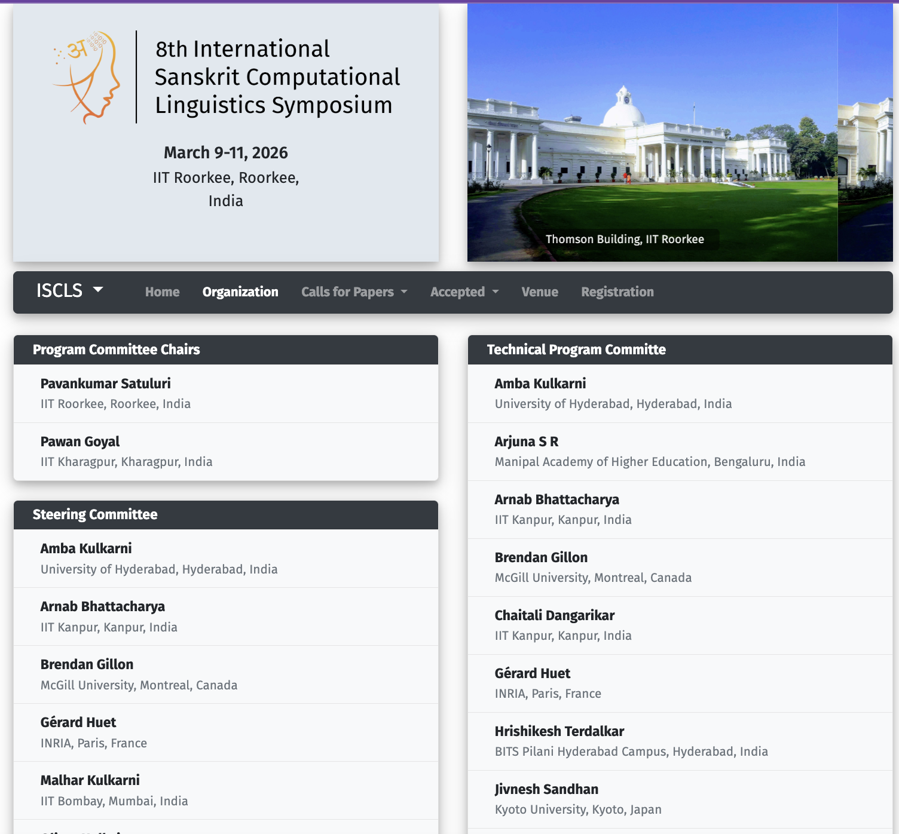
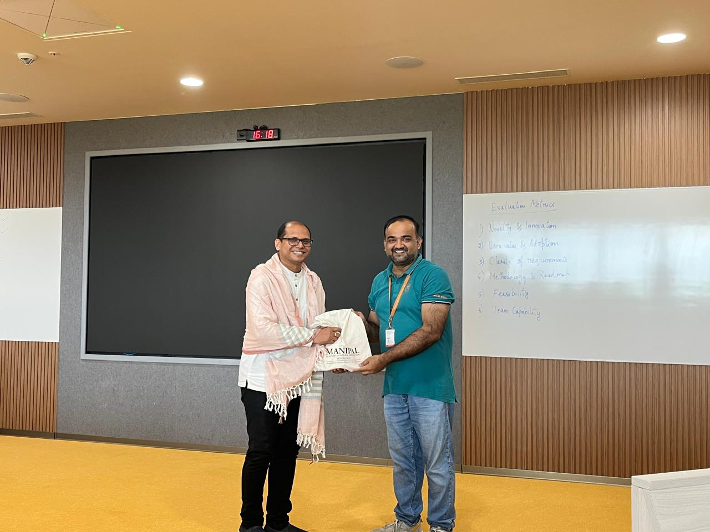
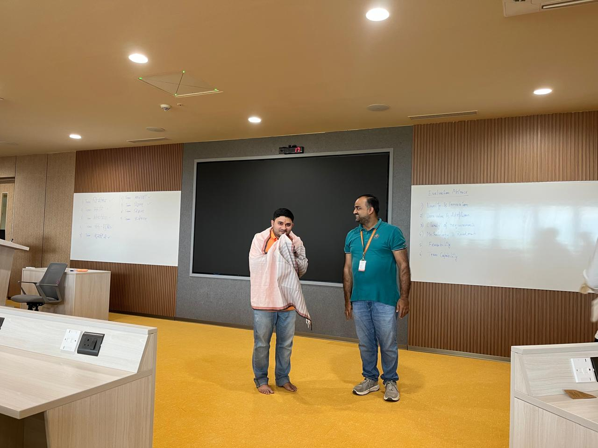

Sanganaka Group members with Prof. Pawan Goyal at the National Workshop on
“Contribution of Mimamsa to Discourse Analysis,” Melkote, 16–17 November 2025.

Sanskrit and AI Conference poster highlighting AI-driven enrichment of Sanskrit.

Prof. Pawan Goyal being honored for EMNLP publications.

CSSL paper presentation and student interactions at EMNLP 2024.

Pretam Ray presenting the CSSL paper at EMNLP 2024.

Invited talk at the 22nd ICDCIT, KIIT Bhubaneswar on Jan 17, 2026.

Keynote talk at the Sanskrit and AI workshop, Feb 26, 2026.

Serving as Program Committee Co-Chair for the 8th ISCLS.

Prof. Pawan Goyal at the First Summer School on Sanskrit Computational Linguistics...

PHD scholar J Manoj Balaji at First Summer School on Sanskrit Computational Linguistics June 22-27, 2026.
Organized by Centre for Digital Humanities (CDH), MAHE Bengaluru in association with Indian Institute of
Technology-Kharagpur (IIT-KGP)
About Sanganaka
The Sanskrit Computational Research Lab (Sanganaka) at IIT Kharagpur advances computational linguistics for
Sanskrit—one of the world’s oldest and most structured languages.
Led by Prof. Pawan Goyal, the lab explores intersections of AI, classical linguistics, and Indian knowledge
systems.
Guided by the motto सा विद्या या विमुक्तये ("That is knowledge which liberates"), Sanganaka develops
scalable, linguistically informed tools such as
SanskritShala and DepNeCTI to bring Sanskrit into modern computational contexts.
Research spans word segmentation, morphological analysis, syntactic parsing, prose–poetry conversion, compound
structure detection, and machine translation,
with a focus on integrating Paninian grammar into NLP pipelines.
Through this work, the lab bridges traditional scholarship and modern computation—reviving ancient knowledge while
building a digital future for Sanskrit.